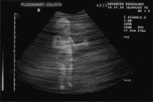

<section id="love" data-transition="fade" style="background:#ffc93c">
  <h1 id="p1d3d0d0f00b0r0-10ecaf22" style="position:absolute; top:37.87px; left:128px; width:1745.63px; font-family:Archivo, Arial, sans-serif; font-size:144px; font-weight:700; line-height:1.05; color:#141b4d">Menneskekroppen er skapt for å danse. Fra før fødsel til og med.</h1>
  
  <aside>Pitcher: «Menneskekroppen er skapt for å danse. Og man ser det fra man er i mors mage at man kan trampe med føttene»</aside>
</section>
